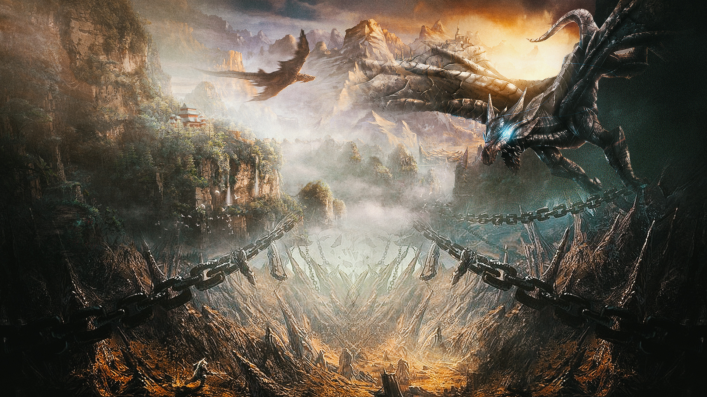
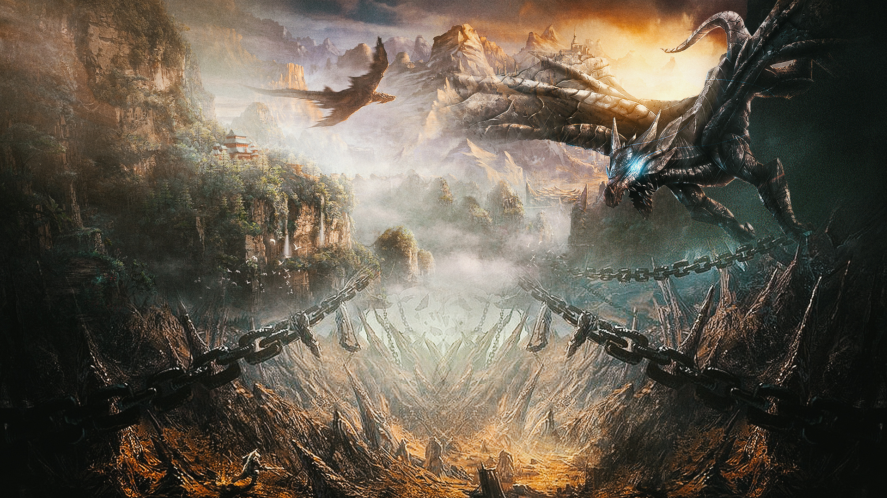
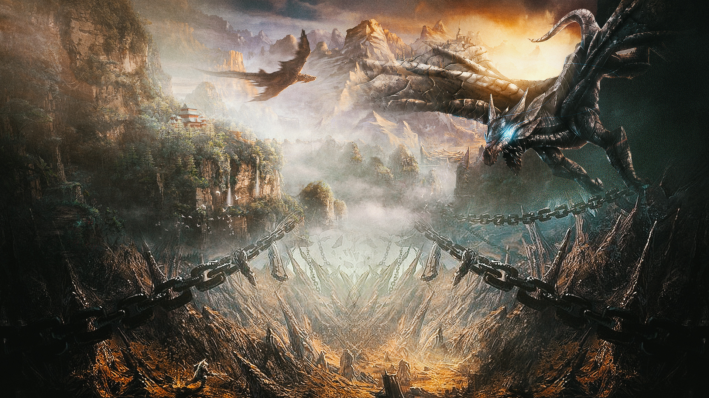
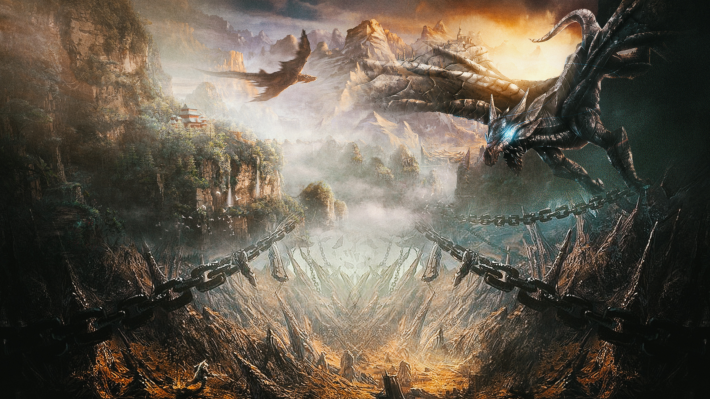

 

第一类真蓄力打法，二斩（真斩包括第一下甩的伤害）：
无蓄力（其实速度约等于一蓄力）141+197+（59+536）=933
结论A.第二斩较第一斩伤害提升39.7%，真斩较第一斩伤害提升322.0%
满蓄力点【刚好在蓄满的节奏点上】309（三蓄）+339（三蓄）+（65+640）（二蓄）=1353
结论B.第二斩较第一斩伤害提升9.7%，真斩较第一斩伤害提升118.2%
C.满蓄的自我伤害提升第一斩119.1%，第二斩72.1%，真斩18.5%
D.满蓄与无蓄，第一斩有两蓄力时间差；第二斩有两蓄力时间差；第三斩有一蓄力时间差。
E.实战中，三满蓄需要的时间太久了，通常不建议使用。
【由上可得，一斩的蓄力收益最高，命名为潜力斩，可以考虑蓄一蓄，第一刀实战的命中率也高，是吧；真斩最低，垃圾股票，该抛就抛，蓄什么蓄，甩出去完事（除非是眠斩）；二斩居中，由于是第二斩（后面真斩等着呢！），实战中乍一看二斩会显得有点鸡肋，蓄也不是不蓄也不是，那怎么办呢。先别急，我的实验结论，本文最后我会给出】
说起来，蓄力的大剑有时候也有点像一款音游呢。
错误手法
弱蓄力点（反正没蓄满，不管蓄了多久）227+265+（56+536）=1087
破蓄力点（无脑蓄力按住不放，超过了满蓄力点后自动砍出）227+265+（59+536）=1087
这就叫过犹不及。
第二类真蓄力，靠斩（以360手柄为例，在三斩任意蓄力中按B或者翻滚后按Y，均可靠，靠会消耗50点耐力，翻滚消耗25点耐力）。
主要目的是缩短真斩的发动时间或者运用靠的霸体抵消怪物的弱攻击，从而不被打断，从而打出真斩。但是如果靠的是二斩，副作用是真斩的蓄力时间会从二蓄变成三蓄，而且伤害和二蓄一样。
斩击伤害同上不变，靠的伤害由于蓄力也略有起伏，但通常根据实际情况决定，靠的伤害对于总体输出影响不大（很短的！反正基本也撞不到几下）。（一蓄力靠77，二蓄力靠109，三蓄力靠141）
第二类真蓄力，靠斩（以360手柄为例，在三斩任意蓄力中按B或者翻滚后按Y，均可靠，靠会消耗50点耐力，翻滚消耗25点耐力）。
主要目的是缩短真斩的发动时间或者运用靠的霸体抵消怪物的弱攻击，从而不被打断，从而打出真斩。但是如果靠的是二斩，副作用是真斩的蓄力时间会从二蓄变成三蓄，而且伤害和二蓄一样。
斩击伤害同上不变，靠的伤害由于蓄力也略有起伏，但通常根据实际情况决定，靠的伤害对于总体输出影响不大（很短的！反正基本也撞不到几下）。（一蓄力靠77，二蓄力靠109，三蓄力靠141）
1）一斩一靠一真，因为一斩支持拔刀斩，且出手的速度最快，所以这是一种很常见的真斩手法，能够比较流畅的打输出。并且在某种程度上来说，一斩还能作为真斩的距离和方向把控器，提升真斩命中率，有时如果一斩能蓄力一下，还能有不小的伤害提升，缺点是一斩的无蓄伤害最低。
2）二靠一真，速度最快，缺点是中间没有延迟输入的二次靠会消耗100点耐力，虽然快了，但会导致真斩吃不到精神抖擞的buff，如果要保证真斩的会心率，速度又快不起来了。而且速度也只比1）快了一丢丢，本身手感又比较怪，有点便秘，为了真蓄力而真蓄力，不推荐。
3）一滚一靠一靠一真 相比于2，更灵活，手感也没有那么便秘，在位移的同时打出真蓄力，缺点是中间没有延迟输入的翻滚和二次靠会消耗125点耐力，真斩更难吃到buff了。
4）一斩一滚一靠一真，其实并没有这种手法。滚了就会从3开始。
由上可得，凡是二靠的真斩，速度都很快，可以抓住比较小的时机打出真斩，但是一来很容易丢失精神抖擞那30%的会心，二来略微有一点操作难度，至少要练到流畅的二靠并且掌握好真斩的距离。那么有什么解决办法呢？其实我设想的解决办法有三种，一种是傻乎乎的多蓄力一会回耐力；第二种，是放弃你的强迫症吧!有没有那个buff又有什么关系呢，第三种就是顺其自然，加入二斩。
5）一靠一斩一真
6）一滚一靠一斩一真，加入二斩的目的一来是为了回耐力，保证真斩可以吃到buff，二来在比较好的输出环境时，多甩一刀，肯定是赚的】
1）和5）可以做一个比较，前者的速度更快，后者的总伤害更高。
3）和6）有一个共同点，是其他所有手法都没有的优势，就是一个多翻滚距离的位置调整，在实战中，无疑是很实用的。